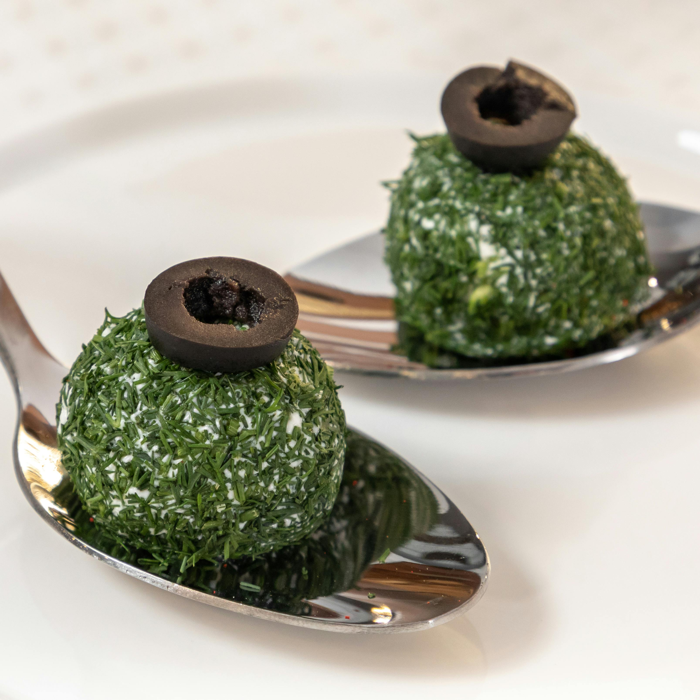
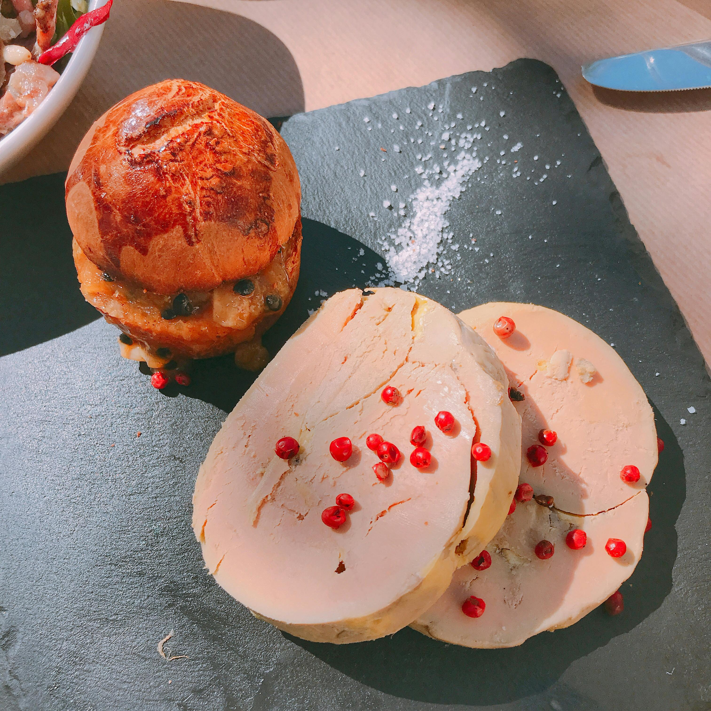

Seccion: Recetas VIP
Preparación: Mezcla el mango, cebolla, jitomate, chile y cilantro con un poco de jugo de naranja. En cada plato coloca rebanadas de Atún Ahumado y acompaña con el pico de gallo y totopos. ¡Disfruta!
Shellpride
Añadimos los langostinos cuando el agua este hirviendo: Cuando el agua está hirviendo, agregamos los langostinos con cuidado. Cocemos los langostinos durante 2-3 minutos.
Langostinos

Para formar los gnocchi puedes usar un tenedor o también hay unas tablitas de madera o plástico con la textura para hacerlos. Puedes ver el detalle en el video, pero como se hace es que con un pedazo de la masa, formas un gusano para luego cortarlo en pequeñas almohaditas. Corta trozos pequeños porque luego se expanden en el agua. Luego esas almohaditas las formas en bolitas y las presionas contra el tenedor o tabla para gnocchi con tu pulgar. Luego lo despegas de un lado, girando la masa sobre sí misma y listo. Por un lado va a tener la textura a rayas y por el otro una hendidura perfecta para atrapar salsa
Gnochi

Preparación: Sacar el foie gras entero del frigorífico y dejarlo atemperar unas 2 horas en algún lugar templado. Esto nos ayudará a desvenarlo. Separar unos 20 pistachos y el resto triturarlos en un procesador de alimentos o mortero hasta obtener una harina fina. Por otro lado, cortar los orejones en cuatro y reservarlos. Una vez el foie esté atemperado, abrir cuidadosamente los lóbulos y retirar las venas procurando no romperlo demasiado. Una vez limpio, añadir el chupito de licor, sal y pimienta de manera uniforme.
Terrina de foie gras
Lavar las jaibas y reservar. En la olla derretir la mantequilla y luego colocar el agua recién hervida, y el vino blanco. Posterior a eso poner las jaibas y aliñar con sal, curry, merkén y pimienta. Dejar cocinar por 25 minutos para que las jaibas se pasen de sabor y aroma.